Design
Overview
A solution which utilises the blueprint will consist of the following types of Azure resources
- Azure backup vault and backup policies/instances
- Azure policy definitions and assignments
- Azure monitor
- Entra ID
- Tfstate storage account
- Resources that need to be backed up
Architecture
The following diagram illustrates the high level architecture:

Description
-
The backup vault stores the backups of a variety of different Azure resources. A number of backup instances are created in the vault, which have a policy applied that defines the configuration for a backup such as the retention period and schedule. The vault is configured as immutable and locked to enforce tamper proof backups. The backup vault resides in it's own isolated resource group.
-
Backup instances link the resources to be backed up and an associated backup policy, and one registered trigger the backup process. The resources directly supported are Azure Blob Storage, Managed Disks, PostgreSQL (single server and flexible server) and AKS instances, although other resources are supported indirectly through Azure Storage (see point 7 for more details). Backup instances are created based on the variables supplied to module, which include configuration and details of the resources that need to be backed up.
-
The backup vault accesses resources to be backed up through a System Assigned Managed Identity - a secure way of enabling communication between defined resources without managing a secret/password, which is assigned the necessary roles to the resources that require backup.
-
Backup administrators are a group of identities that will have time limited read only access to the backup vault in order to access and restore backups as required. The backup administrators will also be responsible for monitoring and auditing backup activity via Azure Monitor (see point 6 for more details), although this task may be delegated to service staff performing the role of backup monitors.
-
The solution requires a user account with elevated subscription contributor permissions that can create the backup resources (such as the backup resource group and backup vault) and assign roles to the resources that require backup. This identity should be implemented as a federated credential of an app registration, which is like a passport that lets you access different services without needing to manage a separate password. The identity also needs writer access to a dedicated Storage Account in order to read and write the terraform infrastructure state. See the deployment identity section for more details.
-
All backup telemetry will flow into Azure Monitor for monitoring and auditing purposes. This will provide access to data such as backup logs and metrics, and provide observability over the solution. Should the need arise, the telemetry could also be integrated into an external monitoring solution.
-
Some resources such as Azure SQL and Azure Key Vault are not directly supported by Azure backup vault, but can be incorporated via a supplementary process that backs up the data to Azure Blob Storage first. In the case of Azure SQL, a typical scenario could be an Azure Logic App that takes a backup of Azure SQL on a regular basis and stores the data in Azure Blob Storage. It is the aspiration of this solution to provide guidance and tooling that teams can adopt to support these scenarios.
Security Design
The following diagram illustrates the security design of the solution:

See the following links for further details on some concepts relevant to the design:
- Azure Multi-user Authorisation (MUA) and Resource Guard
- Backup Operator Role
- Azure Privileged Identity Management (PIM)
Actors
NOTE: The roles listed below are not an exhaustive list, and are only those which are of relevance to the backup solution.
- Tenant Admin
The tenant admin, aka the "global administrator", is typically a restricted group of technical specialists and/or senior engineering staff. They have full control over the Azure tenant including all subscriptions and identities.
The actor holds the following roles:
- Tenant Owner
- Tenant RBAC Administrator
The following risks and mitigations should be considered:
| Risks | Mitigations |
|---|---|
| Backup instance tampered with. | Use of PIM for temporary elevated privileges. |
| Backup policy tampered with. | Use of MUA for restricted backup operations. |
| Role based access tampered. | Dedicated admin accounts. |
| No other account able to override a malicious actor. |
- Subscription Admin
The subscription admin is typically a restricted group of team leads who are deploying their teams solutions to the subscription. They have full control over the subscription, including the backup vault and the backup resources.
The actor holds the following roles:
- Subscription Owner
- Subscription RBAC Administrator
The following risks and mitigations should be considered:
| Risks | Mitigations |
|---|---|
| Backup instance tampered with. | Use of PIM for temporary elevated privileges. |
| Backup policy tampered with. | Use of MUA for restricted backup operations. |
| Role based access tampered. |
- Deployment Service Principal
The deployment service principal is an unattended credential used to deploy the solution from an automated process such as a pipeline or workflow. It has the permission to deploy resources (such as the backup vault) and assign the roles required for the solution to operate.
The actor holds the following roles:
- Subscription Contributor
- Subscription RBAC Administrator limited to the roles required by the deployment
The following risks and mitigations should be considered:
| Risks | Mitigations |
|---|---|
| Backup instance tampered with. | Use of PIM for temporary elevated privileges. |
| Backup policy tampered with. | Use of MUA for restricted backup operations. |
| Role based access tampered. | Secret scanning in pipeline. |
| Poor secret management. | Robust secret management procedures. |
- Backup Admin
The backup admin is typically a group of team support engineers and/or technical specialists. They have the permission to monitor backup telemetry, and restore backups in order to recover services.
The actor holds the following roles:
-
Subscription Backup Operator
-
Backup Monitor
The backup monitor is typically a group of service staff. They have the permission to monitor backup telemetry in order to raise the alarm if any issues are found.
The actor holds the following roles:
-
Monitoring Reader
-
Security Admin
The security admin is typically a group of cyber security specialists that are isolated from the other actors, by being in a different tenant or a highly restricted subscription. They have permissions to manage Resource Guard, which provide multi user authorisation to perform restricted operations on the backup vault, such as changing policies or stopping a backup instance.
The actor holds the following roles:
- Subscription Backup MUA Administrator
| Risks | Mitigations |
|---|---|
| Elevated roles note revoked. | Use of PIM for temporary elevated privileges. |
| Robust and well documented processes. |
NOTE: MUA without PIM requires a manual revocation of elevated permissions.
- Backup Vault Managed Identity
The backup vault managed identity is a "System Assigned" managed identity that performs backup vault operations. It is restricted to just the services defined at deployment, and cannot be compromised at runtime.
The actor holds the following roles:
- Backup Vault Resource Writer
- Reader role on resources that require backup
Terraform Design
The following diagram illustrates the terraform design:

Description
- The az-backup module is essentially everything within the
./infrastructuredirectory of this repository. It consists of the following resources: - A resource group which will contain most of the other resources in the module.
- A backup vault within which backup policies and instances are configured..
- A role assignment which provides read access to the vault.
-
A number of backup modules which can backup a specific type of resource.
-
Backup modules are created which define policies that setup and trigger the backups once the module is deployed. The policies which are configured via terraform variables.
-
Each backup module deploys the resources that are required to backup a resource that contains source data (e.g. a storage account). It consists of a backup policy that is configured in the backup vault on deployment and defines the rules such as backup retention and schedule, and an backup instance that applies the policy and initiates the backups of a specified resource.
-
The consuming application is developed and maintained by the blueprint consumer. It will likely consist of a number of resource that make up an application or service, and contain resources that need to be backed up. The recommended way of using az-backup in the consuming application is to specify the blueprint repository as the remote source of a terraform module. See the following link for more information.
-
The az-backup module is configured by terraform variables which are applied at deployment time. The consuming application can control parameters such as the vault name, location and redundancy, as well as the backup policies and their retention period and schedule. See the module variables section for more details.